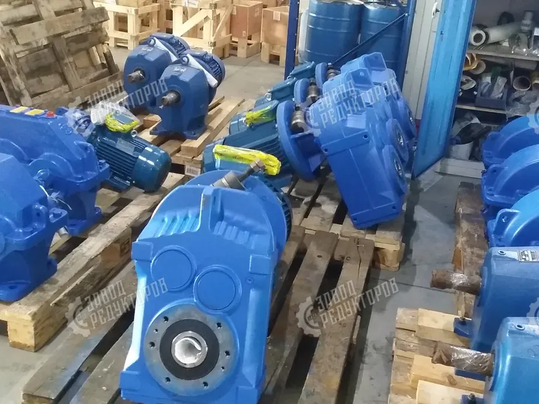

Планетарный редуктор — соосный привод, в котором крутящий момент одновременно передают несколько сателлитов вокруг центральной (солнечной) шестерни. За счёт распределения нагрузки планетарная передача даёт максимальный момент в минимальном объёме и высокий КПД при компактных габаритах.
Подбираем и поставляем планетарные мотор-редукторы под вашу задачу, а также изготавливаем аналоги под заказ по образцу или чертежу. Нужен аналог импортного планетарного привода? — см. импортозамещение, или сразу рассчитайте подбор по параметрам.

| Тип передачи | Планетарная, соосная |
|---|---|
| Передаточные числа (i) | от 3 до 1000+ (много ступеней) |
| Момент на выходе | от десятков до десятков тысяч Н·м по типоразмеру |
| Расположение валов | Соосное, вход и выход на одной оси |
| Исполнение | Лапы / фланец, выходной вал сплошной или полый |
| Поставка | Подбор, поставка и аналоги под заказ |
Подбор и поставка напрямую, без наценки посредников.
Изготовим аналог импортного планетарного привода по образцу.
Подбор по моменту и передаточному — с ценой и сроком.
В планетарной передаче нагрузку одновременно несут несколько сателлитов, поэтому при тех же габаритах планетарный редуктор передаёт больший крутящий момент и компактнее цилиндрического. Вход и выход соосны.
Мы подбираем и поставляем планетарные мотор-редукторы под вашу задачу, а также изготавливаем аналоги под заказ по образцу или чертежу. Пришлите параметры или шильд — рассчитаем подбор и цену.
Там, где нужен высокий момент при компактных габаритах: поворотные приводы, лебёдки, смесители, экструдеры, приводы вращения и подъёма, мобильная и строительная техника.
Да. Подберём по моменту, передаточному числу и присоединительным размерам и изготовим габаритный аналог под заказ — узел встанет на штатное место.
Планетарные мотор-редукторы поставляются с фланцевым или лапным креплением и соосным выходным валом. Возможны исполнения с выходом под шпонку, со шлицами или с полым валом под насадку. Присоединительные и габаритные размеры подбираем под ваше посадочное место.
Да, такие редукторы штатно работают в паре с частотником, а планетарные исполнения с малым люфтом подходят и под сервопривод в позиционных задачах. При регулировании частоты учитывайте охлаждение двигателя на низких оборотах и допустимый диапазон по моменту. Параметры привода и режим работы согласуем при подборе.
Сроки зависят от типоразмера, исполнения и наличия на складе у поставщиков. Позиции под подбор обычно отгружаются быстрее, изготовление аналога по чертежу занимает больше времени. Точный срок называем после согласования спецификации.
На поставляемые редукторы предоставляется гарантия производителя, комплект сопроводительной документации и паспорт изделия. По запросу оформляем счёт, договор и закрывающие документы для юрлиц. Условия гарантии фиксируем в спецификации к заказу.
Оставьте контакты — инженер рассчитает подбор по моменту и передаточному числу и пришлёт цену от производителя.
Получить расчёт и ценуПланетарный мотор-редуктор — это понижающий привод, который выдаёт высокий крутящий момент в компактном корпусе. Мы помогаем купить планетарный редуктор под вашу задачу: подбираем по параметрам, поставляем под заказ, а при отсутствии нужной модели изготавливаем аналоги. Цена зависит от типоразмера, передаточного числа и комплектации — рассчитывается индивидуально.
В планетарной передаче нагрузка распределяется между несколькими сателлитами, которые обкатываются вокруг центрального солнечного колеса внутри неподвижной коронной шестерни. Благодаря этому планетарный редуктор передаёт высокий момент при компактных соосных габаритах, а вход и выход располагаются на одной оси — это упрощает встройку привода в ограниченное пространство.
Планетарные мотор-редукторы ставят на поворотные приводы, лебёдки, смесители, экструдеры и другое оборудование, где нужен большой момент при малых размерах. Чтобы выбрать модель по моменту и передаточному числу, воспользуйтесь калькулятором подбора, а для замены импортного привода — разделом импортозамещение.
| Тип | планетарный, соосный |
|---|---|
| Особенность | высокий момент при компактных габаритах |
| Поставка | подбор, поставка и аналоги под заказ |
| Подбор | по моменту, передаточному, шильду |